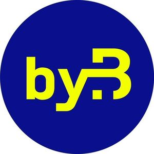

Trade Mark Journal No.2025/029 18 July 2025
WO0000001862566 (1,3,7,8,9,10,11,16,17,25,35)
Office of origin: European Union Intellectual Property Office (EUIPO)
Date of International Registration:17 January 2025
Date of designation in the UK:
17 January 2025

The mark contains the colours blue and yellow.
International priority date claimed: 22 August 2024
(European Union Intellectual Property Office (EUIPO))
(019070584)
- Class 1
- Protective coatings for repelling water [chemical]; protective coatings for buildings [other than paints or oils]; protective coatings for car park decks [other than in the nature of paints or oils]; protective coatings for balconies [other than in the nature of paints or oils]; water resistant protective surface coatings [chemical, other than paints]; chemical additives for lubricants; chemical additives for use in the production of lubricants; soldering pastes.
- Class 3
- Abrasives; tailors' and cobblers' wax; flexible abrasives; emery paper; emery cloth; emery; abrasive paper; grinding preparations for semiconductors; abrasive preparations for polishing; grinding preparations.
- Class 7
- Machine tools; machines for making tools; tools for machine tools; motor driven tools; power operated tools; boring tools [machine tools]; chisel heads [machine tools]; 3D printers; pumps [machines]; shafts for pumps; pump installations; pump starters; pump diaphragms; driving devices for machines; engines for model vehicles; compressors; pressure regulators [parts of machines]; pistons for cylinders; cylinder liners; cylinders for use in printing machines; cylinders for use in the manufacture of colorants; cylinders for mills; cylinders for motors and engines; valves [parts of machines]; pneumatic drills; air cleaners [air filters] for engines; vacuum cleaners; machines for printing labels; soldering irons, gas-operated; soldering irons, electric; hot melt glue guns; portable electric power tools; bits for mining machines; tool bits for metalworking machines; pneumatic shears; scissors, electric; bolt cutters [machines]; nippers [machines]; rechargeable hedge cutters; hydro-pneumatic accumulators; power-operated garden hose reels; reels, mechanical, for flexible hoses; casing rings [parts of machines]; pumping station assemblies; pump-motor assemblies.
- Class 8
- Nippers [hand operated tools]; pliers; flexible screwdrivers (non-electric -); screwdriver bits for hand operated screwdrivers; precision screwdrivers (non-electric -); saw holders; saws [hand tools]; tool belts [holders]; tool holders; hammers [hand tools]; rammers [hand tools]; spanners [hand tools]; ladles [hand tools]; expanders [hand tools]; diggers [hand tools]; rotary tool bits [hand-operated tools].
- Class 9
- Semi-conductors; Solid-State lasers; semiconductor chips; semiconductor wafers; semiconductor elements; electronic semi-conductors; ethernet cables; ethernet adapters; ethernet repeaters; ethernet hardware; ethernet transceivers; ethernet cards; ethernet controllers; ethernet switches; personal transceivers; transmitters; transmitter simulators; radio-frequency identification (RFID) tags; radio-frequency identification (RFID) readers; labels with integrated RFID chips; portable radios; wireless local area network devices; adapters for wireless network access; global positioning system [GPS] apparatus; gyro sensors using GPS functions; software for GPS navigation systems; computer software for global positioning systems; aerials; antenna cables; electrophoretic displays; wearable displays; LED display panels; light-emitting diodes [LED]; bi-polar transistors; diodes; diode arrays; electric diodes; zener diodes; microcontrollers; low power microcontrollers; USB adapters; USB hubs; USB card readers; USB chargers; software; computer software packages; logic probes; logic circuits; electronic logic circuits; programmable logic arrays; intelligent character recognition [ICR] software; IC memory cards; surround processors; coolers for processors for data processing apparatus; fluid coolers for processors; resistors; inductive resistors; resistances, electric; electric resistors [for telecommunication apparatus]; trimmer capacitors; digital potentiometers; fuses; electrical fuses; thermal cutoffs; fuse wire; fuse indicators; commutators; relay sockets; sensors; disc memories; record decks; magnets; magnets, magnetizers and demagnetizers; magnets for industrial purposes; computer housings; housings for measuring apparatus; electrical skeleton switches; terminals [electricity]; terminal blocks (electrical connecting -); plugboards; distribution amplifiers; electrical distributors; electrical connector contact terminals; cable harnesses; cable modems; cable adapters; cable connectors; transducers; transducer energisers; transformers [electricity]; power packs [transformers]; electronic transformers; battery boxes; battery jars; chargers; illumination regulators; illuminometers; loudspeakers; cabinets for loudspeakers; loudspeaker systems; microphones; headsets; wireless headsets; printers; digitizing printers; electronic docking stations; mobile phone docking stations; laptop docking stations; docking stations for smartphones; docking stations for digital music players; docking stations for MP3 players; tablet docking stations; metric converters; plug adaptors; electrical adapters; computer network adapters; keyboards; keyboard terminals; electronic sensors; optical fibre sensors; signal transmitters; oil pressure regulators; air pressure regulators; water pressure regulators; scales; measuring apparatus; temperature sensing apparatus for scientific use; thermal imaging cameras; wireless weather stations; digital weather stations; anti-fogging safety goggles; goggles; self-adhesive labels [encoded]; label readers [decoders]; electronic tags; microscopes; reflecting telescopes; batteries; power cables; electricity measuring instruments; power testers; current transformers; converters, electric; cable detectors; cable locators; plug-in connectors; optical connectors; insulated electrical connectors; coaxial cable connectors; electrical connector housings; covers for electric outlets; moveable sockets; electric sockets; remote control sockets; electrical power outlet boxes; electric terminal lugs; electrical switch cabinets; light sensitive relays; relays, electric; electromagnetic relays; reed contact switches; relays for radio and TV stations; electrotechnical components; electronic components; microelectronic components; optical electronic components.
- Class 10
- Compressors [surgical]; compressors for medical [treatment] purposes.
- Class 11
- Security lighting incorporating a movement activated sensor; security lighting incorporating a heat activated sensor; security lighting incorporating an infra-red activated sensor; pressure relief apparatus for use with gas installations; pressure controllers [regulators] for water pipes; pressure controllers [regulators] for gas pipes; lamp chimneys; bath fittings; bath plumbing fixtures; water control valves for faucets; lamp glasses; lighting apparatus; luminaires; lamps; electric torches; air purifiers; ventilating fans.
- Class 16
- Sticky tape; double sided adhesive tapes for stationery use; double sided adhesive tapes for household use; self-adhesive tapes for stationery use; adhesive materials for office use; label paper; labels of paper; brush pens.
- Class 17
- Semi-worked PLA filaments for use in 3D printing; semi-worked ABS filaments for use in 3D printing; motor slot liners [insulators]; cylinder jointings; valves of vulcanised fibre; clack valves of rubber; valves of synthetic rubber; graphite packing for pumps, gaskets and valves; microporous synthetic sheets for the manufacture of protective workwear; adhesive tapes for use with floor coverings; gap filling tapes; hose linings; hose bandages; glass fibre reinforced hose; plastic hoses for air conditioners; non-metallic insulated pipes.
- Class 25
- Top hats; gloves [clothing].
- Class 35
- Retail services in relation to hearing protection devices; advertising, marketing and promotional services; distribution of advertising, marketing and promotional material; product demonstrations and product display services; trade show and commercial exhibition services.
Bürklin GmbH & Co. KG
Representative: PATENTANWÄLTE EDER SCHIESCHKE & PARTNER MBB, Elisabethstr. 34/II, 80796 München, GERMANY